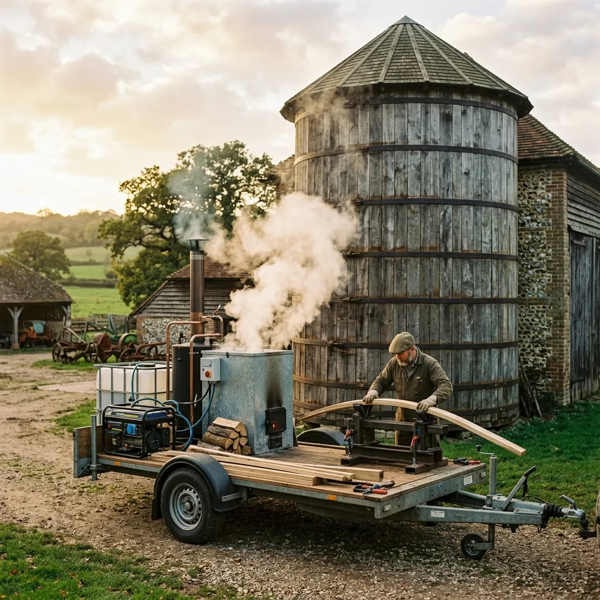

The Guild Cooperative Model
Guild Stewardship: How Retainer Shares Function
When you become a guild member, your estate trust purchases fractional access to our entire Stroud-based timber infrastructure. Unused retainer hours seamlessly roll over into timber bank material credits at the end of the year, ensuring your investment is never wasted. The cooperative workflow is entirely transparent:
1. Annual Estate Survey
Our master millwright visits your property annually, conducting non-destructive micro-drill testing and hoop tension assessments to catch decay early.
2. Timber Allocation Purchase
Based on the survey, stewards requisition necessary seasoned oak or Douglas fir staves directly from our central holding at cooperative rates.
3. Mobile Rig Scheduling
Major restoration work is scheduled, and our itinerant steam-bending rig is dispatched to your estate for on-site fabrication.
4. Emergency Repair Coverage
Members receive priority call-out guarantees. If a catastrophic hoop failure occurs, our team mobilizes within forty-eight hours.
The Itinerant Workshop Trailer Specs
Historic agricultural silos and remote railway water towers are rarely situated near convenient three-phase power supplies. Our mobile workshop trailers are completely self-contained, generating their own electrical and thermal power to operate in the most isolated rural estates without relying on farm infrastructure.
| Equipment Module | Specification Details |
|---|---|
| 35kW Diesel Steam Generator | Provides continuous high-pressure steam for 3-metre on-site timber bending boxes. |
| Hydraulic Stave Clamps | Precision force application for forming 75mm oak planks to compound curvatures. |
| Portable Iron Ring Bending Rollers | On-site forging adjustments for exact lug placement and hoop diameter sizing. |
| Micro-Drill Sonic Inspection Kit | Non-destructive core assessment to verify the internal integrity of existing staves. |
Restoration & Guild Retainer Enquiries
Can a leaking wooden water tower be repaired without complete dismantling?
Yes. By carefully slacking the tension on specific iron hoops and utilising hydraulic jacks, we can safely extract and replace individual rotted staves while leaving the majority of the structure entirely intact.
How long does a fully restored white oak water tank last?
When constructed with adequately seasoned, quarter-sawn English oak and maintained with correct hoop tension, a restored tank will serve reliably for fifty to eighty years.
What is the difference between a Guild Retainer and a standard contractor quote?
Standard contractors price high risk into bespoke timber work. A guild retainer means you share the fixed costs of maintaining the timber stockpile and workshop machinery with other estates, dramatically lowering the actual project execution cost.
Do you handle emergency hoop snaps during winter freezing?
Absolutely. Ice expansion is the primary cause of iron fatigue failure. Retained guild members receive guaranteed emergency deployment to stabilise and re-hoop freezing structures.
Are non-member estates able to purchase timber from the central reserve?
No. Our seasoned timber stock is strictly reserved for the preservation of member estates. The five-year air-drying process means our timber cannot be quickly replaced if sold commercially.
Verified Estate Steward Reports
100% Structural Pass Rate Across 42 Historic Tower Inspections.
"The guild's approach is a revelation. We faced the imminent collapse of a 19th-century water tower that standard contractors refused to touch. The millwrights salvaged it brilliantly."— Lord Arthur Pembroke, Cotswold Heritage Trust
"The speed at which the mobile steam rig deployed to site saved our primary farm silo following a brutal winter frost. Outstanding, authentic craftsmanship."— Eleanor Vance, Head Conservator, West Country Farm Museum
Apply for Guild Retainer Membership
Annual member intake is strictly capped at 25 estates per region to ensure timber reserves remain adequate for all stewards.